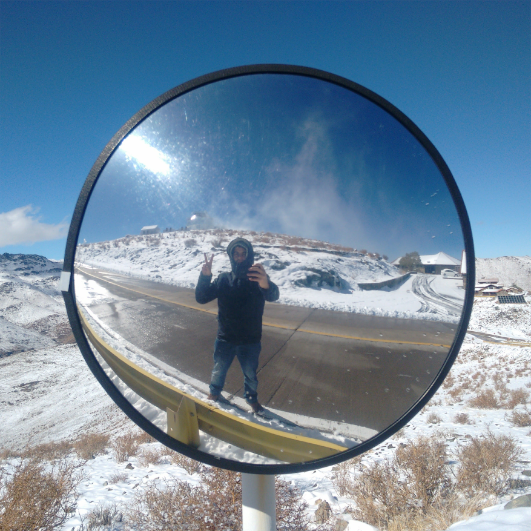

Hi,
I'am Jorge
Anais Vilchez
About

Quiubo!
I am an astronomer from Chile. My research interest involves applying artificial intelligence to Astronomy, which has become very important in recent years to take full advantage of the massive astronomical surveys. I got my master's degree at Universidad de Antofagasta, Chile, searching stellar clusters at the far end of the Galactic bar using unsupervised machine learning algorithms. I am currently pursuing a PhD at the same university working with Dr. Javier Alonso García on the characterization of the Sagittarius Dwarf Spheroidal Galaxy at low galactic latitudes.
Portfolio
Academic Teaching & Course Development
Currently, I work as an Assistant Professor at Duoc UC, where I teach Machine Learning, Big Data, and Deep Learning for informatics engineering students. In this role, I focus on guiding students through complex concepts by developing hands-on, project-based curricula utilizing modern frameworks like PyTorch and Keras.
Science Communication & Outreach
I have interest in making science accessible to the public. Since my undergraduate years, I have participated in outreach programs like "Física itinerante" and developed interactive astronomy workshops, most notably the "Bling bling universe" initiative. Furthermore, I have written science communication columns for El Mercurio de Antofagasta newspaper, bridging the gap between academic research and the broader community.